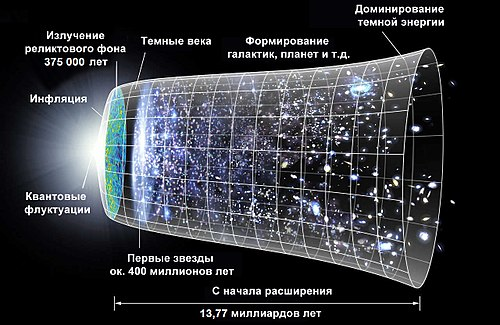
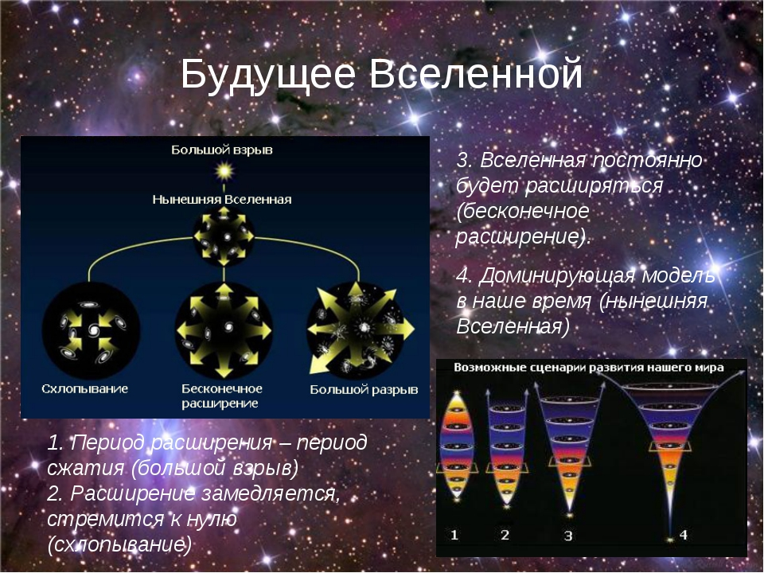

информация
Изучая распределение звезд и звездных скоплений по небесной сфере, мы можем убедиться в том, что оно неравномерное. Больше всего слабых звезд в полосе Млечного пути и вблизи этой полосы. Шаровые звездные скопления практически все сосредоточены в полусфере с центром в созвездии Стрельца. Это и говорит о неоднородности Галактики: ее плоская составляющая имеет плотность, увеличивающуюся к плоскости диска, а сферическая-плотность, увеличивающуюся к ядру. Однако если говорить о более ярких звездах, видимых невооруженным глазом, мы найдем их в любой части небесной сферы. Значит, ближайщие окрестности Солнечной системы имеют относительно однородное строение.
Отсюда следует, что, когда речь идет об однородности, нужно обязательно иметь в виду ее масштаб. Все зависит от того. какую ячейку мы рассматриваем как единичную для определения в ней числа объектов и однородность какого пространства мы имеем в виду.
Как обстоит дело с однородностью всей доступной наблюдениям Вселенной? Иными словами, как распределены в ней Галактики?
  сверхновая звезда